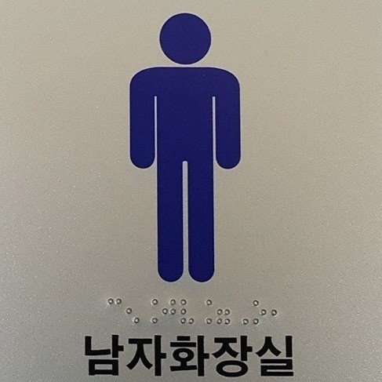
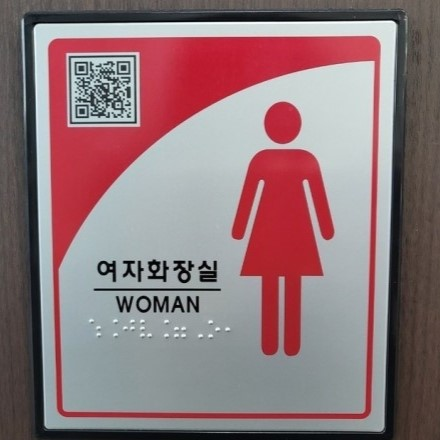
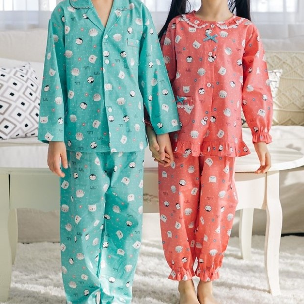
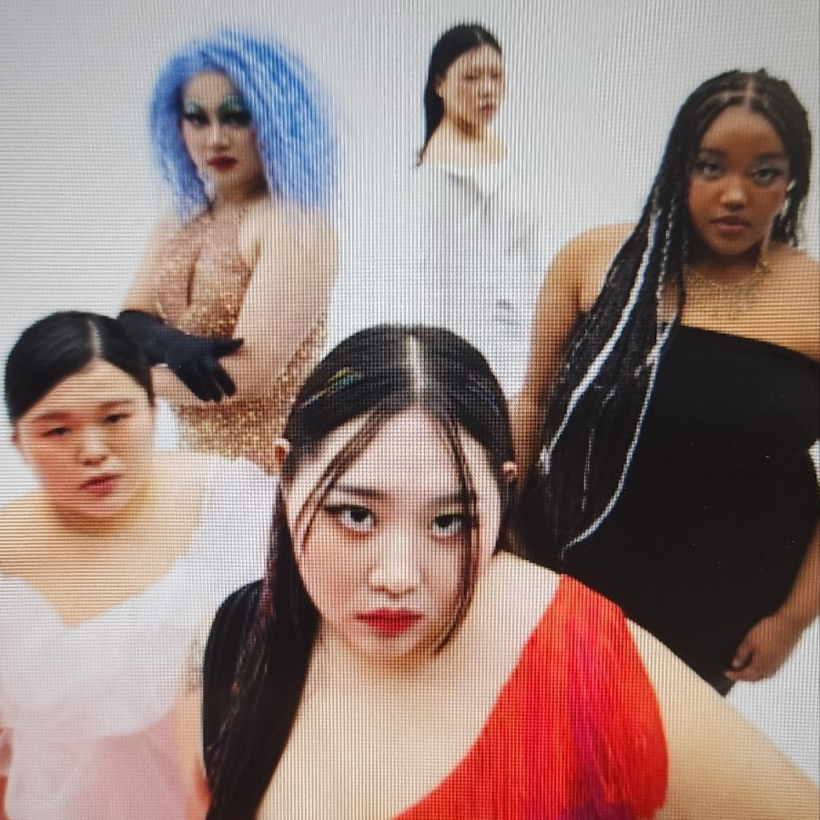
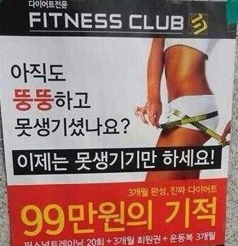
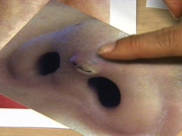
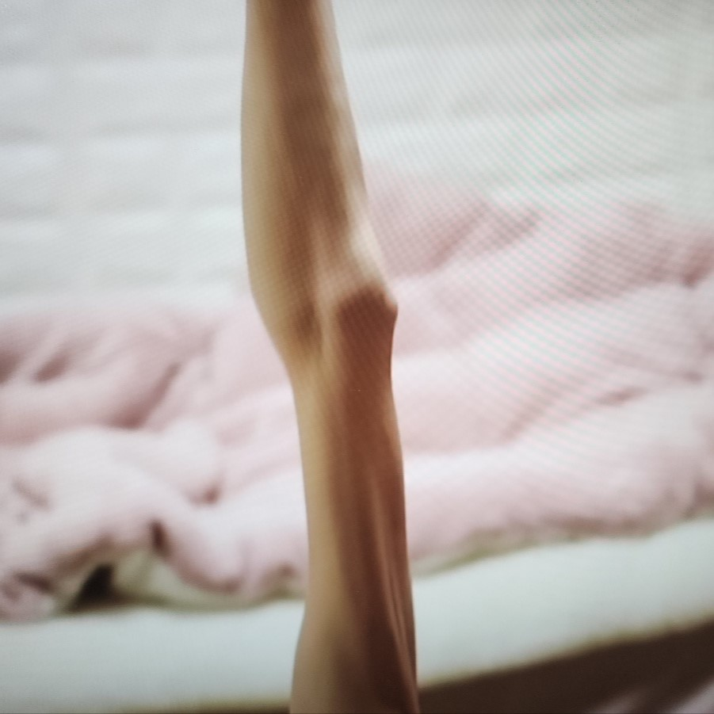

성별
  평소에 내 주변 사물의 사진들, 로고, 픽토그램들을 보면 자세히 보면 신경 쓰지 못하고 넘어가는 점들이 많다. 예를 들어 화장식 픽토그램을 보면, 남자 화장실 캐릭터는 바지를 입고, 여자 화장실 캐릭터는 치마를 입은 그림이 대부분이다. 또 여자아이와 남자아이 물건들의 색깔은 남자는 파랑 계열, 여자는 빨강 계열로 만들어진 경우가 대다수다. 이런 색의 상징성은 옛날 종교나 산업 등으로부터 계속 이어져 오고 있다. 이런 식으로 색상이나 옷, 직업 등을 제한하는 사고를 하게 되면 미래의 아이들이나 약자의 선택권을 앗아갈 수도 있다. 그렇다면 ㄷ=굳이 이런 색 구분이나 직업 등을 굳이 제한 할 필요는 없다고 생각한다.
신체
   길을 가다 보면 가끔 비정상적으로 마른 사람들이 보인다. 그중에는 선천적으로 마른 사람들도 있지만 사회가 말하는 미의 기준에 심하게 맞추려다 그런 몸이 된 사람도 있다. 그러다 보면 체형뿐만 아니라 얼굴까지 손을 대어 부작용으로 고생하는 사람들도 적지 않다. 이런 상황을 겪지 않기 위해 자신의 신체를 아끼는 생각을 하는 것이 좋다.